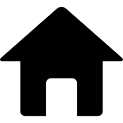
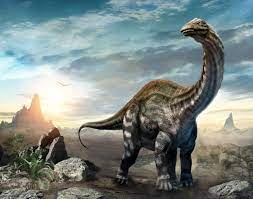

Tuojiangosaurus multispinus es la única especie conocida del género extinto Tuojiangosaurus (lat. "reptil de Tuojiang") de dinosaurio tireóforo estegosáurido, que vivió a finales del período Jurásico, hace aproximadamente 160 millones de años, en el Oxfordiense, en lo que hoy es Asia.
Tuojiangosaurus era bastante semejante al Stegosaurus en su aspecto y en sus hábitos alimenticios. Tuojiangosaurus era un gran estegosaurio, que alcanzaba los 6,5 metros de largo y 2,8 toneladas métricas de masa corporal. Tuojiangosaurus es el mejor conocido de los estegosáuridos chinos. En 1977, Dong proporcionó un diagnóstico, pero este consistió en gran parte en rasgos compartidos con otros estegosáuridos. En 1990, Peter Malcolm Galton señaló una autapomorfía, las espinas de las vértebras de la base de la cola poseen espinas con faldones óseos que van desde su frente hacia los lados.
Tenía quince pares de placas puntiagudas y estrechas a lo largo del dorso, desde el cuello hasta el extremo superior de la cola. Las placas más largas crecían sobre sus caderas. En el extremo de su corta cola tenía dos pares de afiladas y largas espinas, una característica también del Stegosaurus. Como Kentrosaurus, Tuojiangosaurus tenía dos filas de placas a lo largo de la espalda, que llegaron a ser más alta sobre la región de la cadera. También tenía dos púas a cada lado del extremo de la cola, insertadas aproximadamente a 45 grados. Todas las placas tienen una sección central engrosada, como si fueran espigas modificadas.Dong estimó que había alrededor de diecisiete pares de placas y púas. Tuojiangosaurus tenía al menos dos puntas bastante robustas que apuntaban hacia afuera a cada lado del extremo de la cola, en un ángulo de aproximadamente 45 grados con respecto a la vertical. En stegosauridae, esta disposición de picos se conoce cariñosamente como "thagomizer".Dong pensó que era posible que hubiera cuatro pares de púas. Paul, basándose en el espécimen CV 00208 de "Chungkingosaurus", interpretó el thagomizer como una "matriz de alfiletero", con dos pares verticales de púas gruesas y un tercer par de púas estrechas que apuntan hacia atrás.
Tuojiangosaurus tiene la cabeza estrecha y baja típica, el cuerpo voluminoso y los dientes bajos de otros estegosáuridos. Las extremidades, especialmente los brazos, son bastante cortas. Hay al menos veinticinco dientes dentarios. Los dientes tienen una base gruesa, cíngulo , que se fusionan en el interior en una cresta mediana vertical triangular. Las vértebras dorsales tienen arcos neurales altos. El omóplato tiene un acromion rectangular.
Al carecer de las altas espinas dorsales para la inserción de músculos encontrado en las vértebras del Stegosaurus, probablemente no podía alzarse sobre sus piernas traseras. Esto sugiere que habría comido la vegetación baja, cercana del suelo.
|  |
 |
 |
 |
 |
|